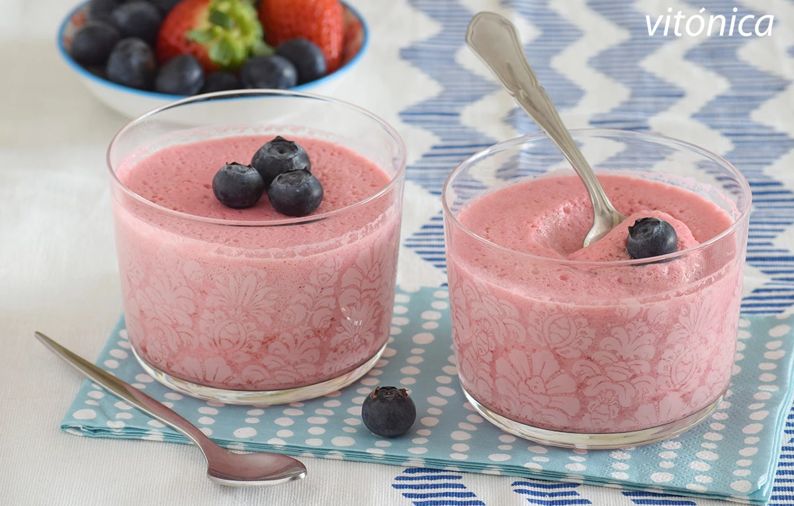

Volver
Índice de contenidos
Ingredientes
Paso a paso
Resultado final
Postre (Mousse fresas y queso fresco)
Ingredientes
Para 6 personas
500 g. Fresa o fresón pesadas sin rabito
500 g. Queso fresco batido desnatado
5 ml. Esencia de vainilla
2 g. Agar agar (equivalente a 9 hojas de gelatina)
Paso a paso
1.Lavar muy bien las fresas, con suavidad, y secarlas con cuidado.
Retirar el rabito y trocearlas, pesándolas ahora para obtener medio kilo.
Triturar con un robot de cocina, picadora o procesador de alimentos, hasta tener un puré sin grumos de fruta.
2.Incorporar el queso fresco batido desnatado, escurrido, y triturar un poco más para mezclar.
Se puede usar también yogur griego natural -o yogur normal natural, pero que sea cremoso-.
3.Combinar el agar-agar y calentar en un cazo a fuego suave, hasta justo llevar a ebullición.
Remover bien y repartir en moldes, vasitos o un gran molde grande. Esperar a que enfríe un poco
y llevar a la nevera, donde tendrá que reposar como mínimo dos horas.
4.Nota: es importante leer bien las instrucciones del agar-agar, ya que cada marca puede dar
Queremos una textura cremosa, no gelatinosa, por eso no es recomendable usar más de 2 g.
Resultado final

Volver al inicio de la página